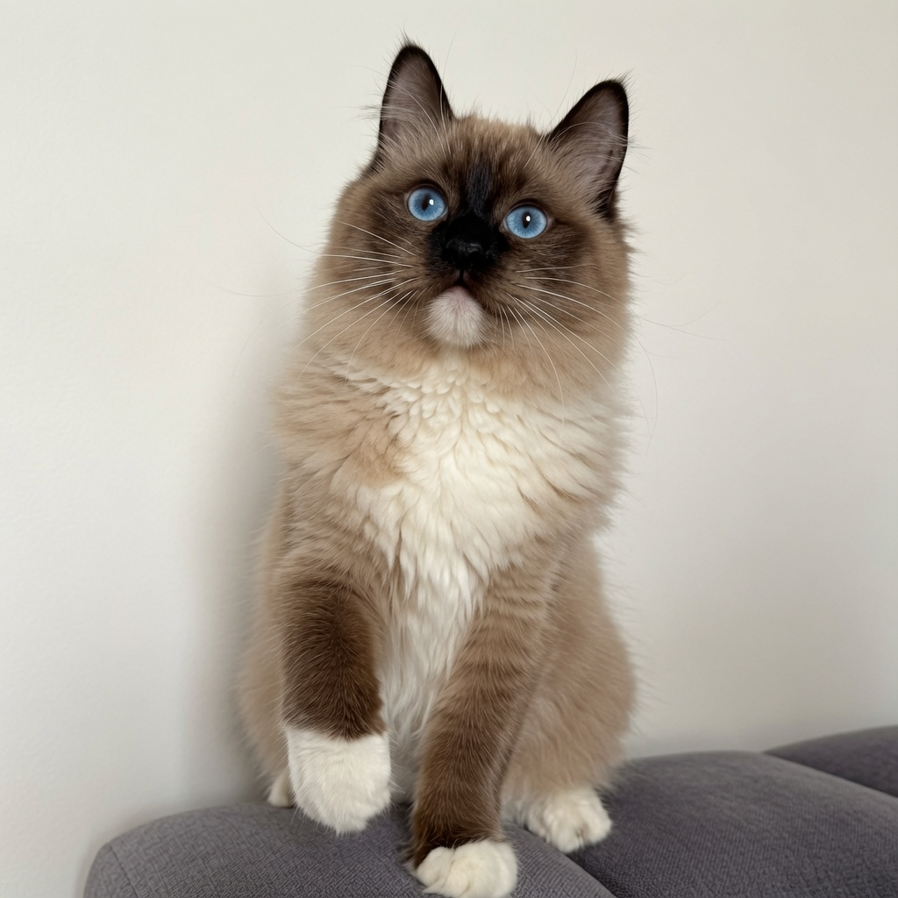
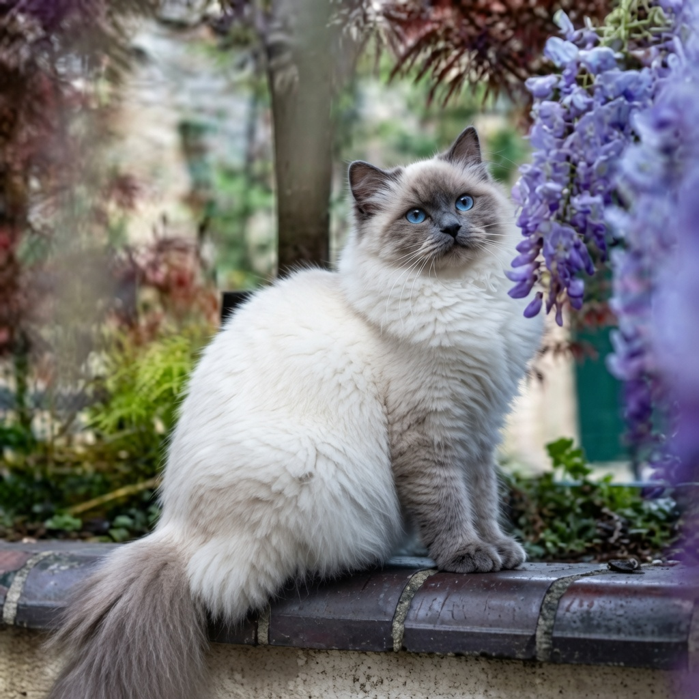
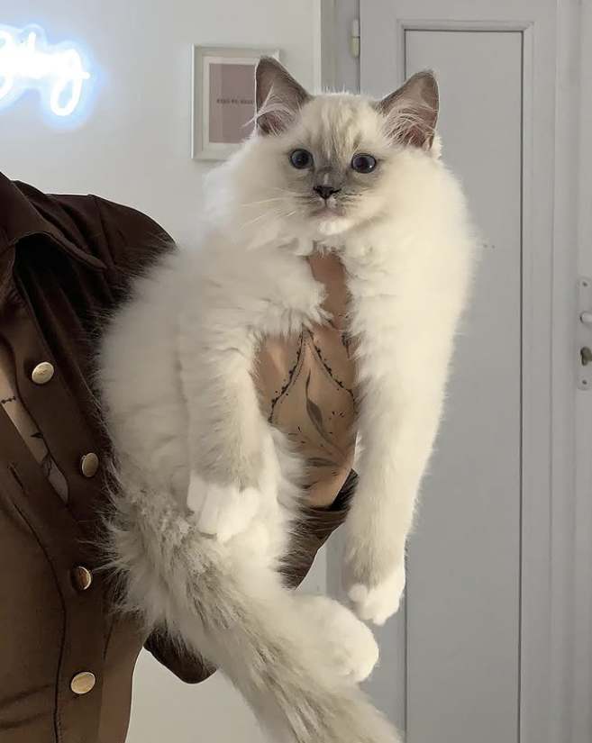
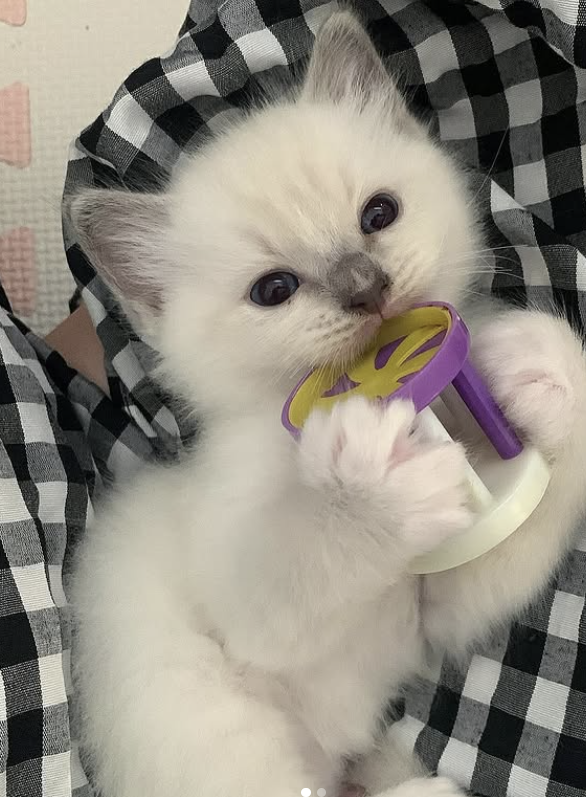

Seal
Une couleur profonde et chaude, souvent très contrastée avec le corps clair.
Le Ragdoll offre une grande richesse de couleurs, de patrons et d’intensités. Chaque chaton possède une harmonie unique, qui évolue doucement avec le temps.

Couleurs, patrons, intensités et évolutions du Ragdoll.
Chez le Ragdoll, les couleurs peuvent s’intensifier progressivement avec l’âge. Un chaton très clair à la naissance peut révéler ses nuances au fil des semaines et des mois. C’est ce qui rend chaque évolution particulièrement délicate à observer.
Les couleurs principales du Ragdoll se déclinent dans des tons plus ou moins intenses, allant du seal profond au lilas très clair, avec des nuances chocolat, bleu, cinnamon ou fawn.
Une couleur profonde et chaude, souvent très contrastée avec le corps clair.
Une nuance douce et grisée, élégante, plus froide que le seal.
Une teinte brune plus lumineuse et plus tendre que le seal.
Une couleur très claire, douce, avec une impression poudrée et délicate.
Une nuance chaude et rare, avec un brun plus clair et légèrement roux.
Une version très douce et diluée du cinnamon, beige rosé et subtile.
Au-delà de la couleur, le patron détermine la répartition des zones colorées, du blanc et des contrastes. C’est ce qui donne au visage, aux pattes et au corps leur équilibre visuel.
Les extrémités sont colorées : oreilles, masque, pattes et queue. Le corps reste plus clair.
Le chat présente des gants blancs aux pattes, souvent avec une ligne blanche douce sur le ventre.
Le blanc est plus présent, notamment sur le visage, donnant souvent une expression très ouverte et lumineuse.
Certaines lignées présentent des variations d’intensité qui influencent la couleur du corps, le contraste et parfois l’apparence générale du regard.

Le Ragdoll traditionnel présente généralement un contraste marqué entre le corps clair et les extrémités colorées, avec une évolution progressive de la robe.
Une intensité plus soutenue, avec un corps souvent plus coloré que le traditionnel.
Une robe encore plus chaude et enveloppante, avec moins de contraste.
Une couleur plus uniforme, avec une expression différente du Ragdoll traditionnel.


Certaines robes peuvent aussi présenter des motifs supplémentaires. Le tabby apporte des marquages plus visibles, le tortie mélange plusieurs tons, et le torbie combine l’effet tabby avec les nuances tortie.
Lors d’une adoption, la chatterie vous accompagne pour comprendre l’évolution possible de la robe, le caractère du chaton et l’harmonie qui correspond le mieux à votre foyer.